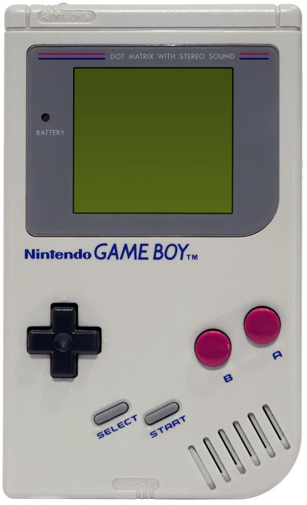

Turn your photos into four-tone Game Boy-style images. Choose a picture, see it on a classic handheld, and download your own retro PNG.
● Your photos stay on your device. No image uploads.
01 / Make it yours
Choose a photo
Portraits, pets, landscapes: give a picture the four-tone treatment.
Use PNG, JPEG, WebP, or another image your browser can open. Maximum input: 25 MiB and 40 megapixels.
Pixel art keeps the classic 308 × 282 look with crisp, enlarged pixels. Higher detail converts more pixels, preserves proportions, and never enlarges the source. Changing settings reconverts your selected image.
Select a ready-made image to test the preview and PNG download.
02 / Back to the screen
Your retro preview

Example preview · Output: 308 × 282 pixels · PNG
Under the hood
How does it work?
Choose classic 308 × 282 pixel art, enlarged up to 8×, or a higher-detail image with a long edge up to 2560 pixels.
A background worker compares pixel colours with a retro palette and reduces them to four output tones, keeping the page responsive.
The result appears in an HTML canvas, ready to download as an opaque PNG.
Colour processing is bounded to the chosen output size. Pixel-art enlargement happens after conversion, without smoothing. The console shows a scaled preview; the download keeps your selected resolution. There is no server-side image processing.
An experiment by Rubén Cougil
A familiar screen, a new picture
Game Boy Yourself is a browser photo experiment by Rubén Cougil, inspired by the look of the classic Nintendo Game Boy.
It is an image effect, not a Game Boy emulator. You can use it to make a retro portrait, experiment with a favourite picture, or simply enjoy the old-school preview.
No. Selected photos are opened and converted locally in your browser. This app does not send your image to a server. The sharing buttons share a link to the converter, not your picture.
What size and format will I download?
You get an opaque PNG using four retro output tones. Classic pixel art stretches your photo to 308 × 282 pixels, then optionally enlarges it to 616 × 564, 1232 × 1128, or 2464 × 2256 without smoothing. Higher detail preserves the original proportions, with a maximum long edge of 1280, 1920, or 2560 pixels; smaller sources are not enlarged. The 308 × 282 console preview is not the original Game Boy screen resolution.
Can my browser handle large photos?
Normal camera photos can be converted locally, but available memory varies by device. Inputs are limited to 25 MiB and 40 megapixels, and the largest output is about 6.6 megapixels. A worker handles colour conversion, and Cancel stops an unwanted conversion. Oversized common image headers are checked before decoding when available; other files must be decoded before their dimensions can be checked. Decoding a very large source can still use substantial memory, so resize it first if your device struggles. These limits reduce risk, not guarantee that every image will work.
Which images can I use?
Use an image your browser can decode, such as PNG, JPEG, or WebP. If a file cannot be opened, the converter explains the problem and keeps your last successful result. The download is a single still PNG, even when the source is animated.
Can I use it on a phone?
Yes. Choose a supported image from your device, wait for the preview, and use Download PNG to save it. Start with a smaller output on memory-constrained phones. You need JavaScript enabled and a browser with HTML canvas and Web Worker support.